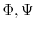

# Example for model.build_sequence(), secondary_structure.alpha()
from modeller import *
from modeller.optimizers import conjugate_gradients
# Set up environment
e = environ()
e.libs.topology.read('${LIB}/top_heav.lib')
e.libs.parameters.read('${LIB}/par.lib')
# Build an extended chain model from primary sequence, and write it out
m = model(e)
m.build_sequence('GSCASVCGV')
m.write(file='extended-chain.pdb')
# Make stereochemical restraints on all atoms
allatoms = selection(m)
m.restraints.make(allatoms, restraint_type='STEREO', spline_on_site=False)
# Constrain all residues to be alpha-helical
# (Could also use m.residue_range() rather than m.residues here.)
m.restraints.add(secondary_structure.alpha(m.residues))
# Get an optimized structure with CG, and write it out
cg = conjugate_gradients()
cg.optimize(allatoms, max_iterations=100)
m.write(file='alpha-helix.pdb')
-helix (mainchain conformation class ``A'') for the residue segment specified by residues (which can be created using the model.residue_range() function). The helix is restrained by  binormal restraints, N-O hydrogen bonds,
-